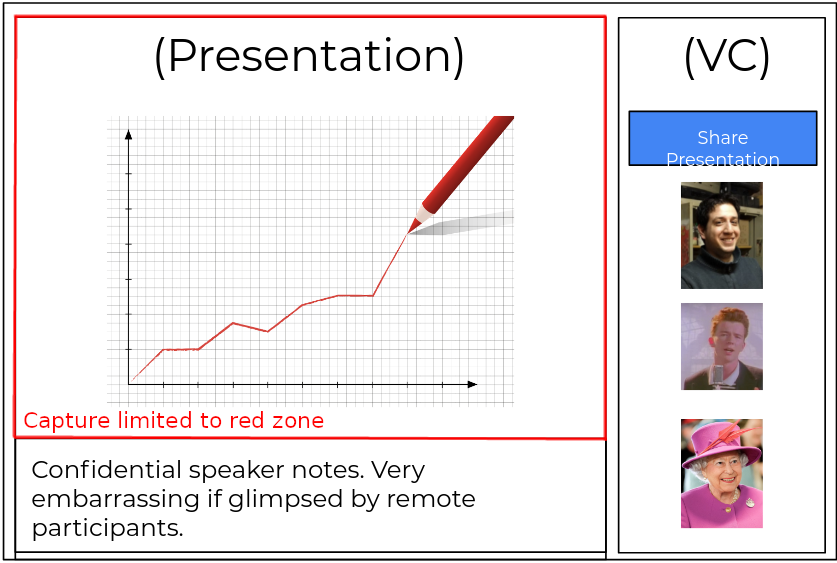

üóìÔ∏è April@w3c: @w3cx #MOOC, group meetings, @TheWebConf , etc. More at https://www.w3.org/participate/eventscal.html
4-5 April: the Web #MachineLearning Working Group runs 2 on-line brainstorming sessions on #ethics as applied to running Machine Learning in browsers - see background by @radiojay in https://www.w3.org/2022/03/ml-ethics/
https://twitter.com/w3cdevs/status/150983087615008770821-22 April: @ImmersiveWebW3C #WorkingGroup and #CommunityGroup #face2face meeting @MSFTReactor in #SanFrancisco üá∫üá∏üåÅ #WebXR https://github.com/immersive-web/administrivia/blob/main/F2F-April-2022/schedule.md
https://twitter.com/w3cdevs/status/150983088381308111915 April: join a new session of @w3cx #HTML5 & #CSS Fundamentals #MOOC to learn basics of front-end Web development https://edx.org/course/html5-and-css-fundamentals @edXOnline
https://twitter.com/w3cdevs/status/150983088151879681128 April: @TheWebConf Web Developer and W3C track, chaired and hosted on-line by @dontcallmeDOM and @tomayac - https://www2022.thewebconf.org/cfp/web-dev-w3c/
https://twitter.com/w3cdevs/status/150983088801577370125 April: the @w3c's 3rd Emmy award üèÜ recognizing the work of the Web Fonts #WorkingGroup ! @TheEmmys' ceremony happens in #LasVegas üá∫üá∏
https://twitter.com/w3cdevs/status/1509830886124142639The core #WebXR device API has reached Candidate Recommendation, a signal that it is now considered stable and fulfills its known requirements, including those identified through accessibility, security, privacy and internationalization reviews #timetoimplement https://twitter.com/w3c/status/1509479562480136194
#WebXR is the core component of the #ImmersiveWeb vision made possible by the @ImmersiveWebW3C groups - one where Web browsers become a natural entry point to Virtual and Augmented Reality, positioning the Web as an anchor for any #metaverse project
https://twitter.com/w3cdevs/status/1509894550927650838#WebXR is already supported on a wide range of browsers and hardware combinations, as well as through a polyfill https://immersiveweb.dev/#supporttable
https://twitter.com/w3cdevs/status/1509894558238314498And thanks to recent work by @OpenWebDocs the documentation on #WebXR on @MDN is amazing https://developer.mozilla.org/en-US/docs/Web/API/WebXR_Device_API/Fundamentals
https://twitter.com/w3cdevs/status/1509894561077809154And to bring feedback on the API, as usual, head to the spec github repo https://github.com/immersive-web/webx/
https://twitter.com/w3cdevs/status/1509894566085857281You can learn more about #WebXR and its capabilities on our dedicated YouTube playlist https://www.youtube.com/watch?v=dssQSeTrqPI&list=PLNhYw8KaLq2UgIz02fSX-rZRg7pCgxv0R
https://twitter.com/w3cdevs/status/1509894563577618432The #WebRTC Working Group releases a new API: Region Capture allows a Web app to capture a DOM-encapsulated portion of their content https://www.w3.org/TR/2022/WD-mediacapture-region-20220405/ #timetoreview https://twitter.com/w3c/status/1511232031195340804
A typical use case of Region Capture would be a web app that brings together a video conference component and a content component (e.g. slides), and offer the user the possibility to show only a subset of the content (e.g. not including speaker notes).
https://twitter.com/w3cdevs/status/1511326918909509638Watch @eladalon1983 introducing the use case and the early Region capture API proposal in the #WebRTC Working Group meeting back in November
https://youtu.be/NHErekrFlSE?t=1520
https://twitter.com/w3cdevs/status/1511326928581578752This early implementation allows to test the associated demo of Region Capture https://w3c.github.io/mediacapture-region/demo/
https://twitter.com/w3cdevs/status/1511326933136588802An early implementation of the Region Capture API is available under origin trial in #chromium https://chromestatus.com/feature/5712447794053120
https://twitter.com/w3cdevs/status/1511326930972426242As usual, head to the github repository to provide input on the API and whether it fulfills the need for your applications
https://github.com/w3c/mediacapture-region
https://twitter.com/w3cdevs/status/1511326935212830720This #TechEmmy award @TheEmmys recognizes the work done for: "Standardization of Font Technology for Custom Downloadable Fonts and Typography for Web and TV Devices" - congrats! üëèüëè https://twitter.com/w3c/status/1518572049588969473
Representatives from W3C staff and the @w3c #WebFonts #WorkingGroup will attend the awards ceremony tonight 25 April 2022 in Las Vegas, üá∫üá∏ https://mobile.twitter.com/w3cdevs/status/1486691065541316608
https://twitter.com/w3cdevs/status/1518588259944878081Today at 3pm CET (#Lyon's time üá´üá∑), first session of the "Developer and W3C track" @TheWebConf, chaired by @dontcallmeDOM (@w3c). Listen to the following speakers, online: üëá

https://twitter.com/w3cdevs/status/1519608303847976966@TailhardatL, @yoan_chabot (@orange) and @rtroncy (@EURECOM) explore the strengths and weaknesses of standard data collection methods such as mining web #browser history and network traffic dumps - see code: https://github.com/Orange-OpenSource/dynagraph and paper: https://www2022.thewebconf.org/PaperFiles/44.pdf
https://twitter.com/w3cdevs/status/1519608308985909249Shachaf Poran, Gil Amsalem, Amit Beka and Dmitri Goldenberg (@bookingcom) explain the trade-offs they considered when building a voice assistant from repurposed models #MachineLearning - see paper: https://www2022.thewebconf.org/PaperFiles/42.pdf
https://twitter.com/w3cdevs/status/1519608311766736901Today at 4:45pm CET (#Lyon's time üá´üá∑), second and last session of the "Developer and W3C track" @TheWebConf, chaired by @tomayac (@Google). All happens online, and the row of speakers is: üëá
https://twitter.com/w3cdevs/status/1519686884947075073Romain Fouquet, Pierre Laperdrix and Romain Rouvoy (@inria, @univ_lille, @cnrs) introduce a new server-side #plugin that automatically rewrites framework-provided #WebUI components by alternatives that do not require any #JavaScript - their paper: https://www2022.thewebconf.org/PaperFiles/41.pdf
https://twitter.com/w3cdevs/status/1519686895306948614A group of #researchers and #developers from the computer music industry, incl. @micbuffa (@univ_cotedazur), present an open #WebAudio #plugin standard, i.e. the infrastructure to support high level #audio plugins for #browser based audio apps - see paper: https://www2022.thewebconf.org/PaperFiles/40.pdf

https://twitter.com/w3cdevs/status/1519686892840755201